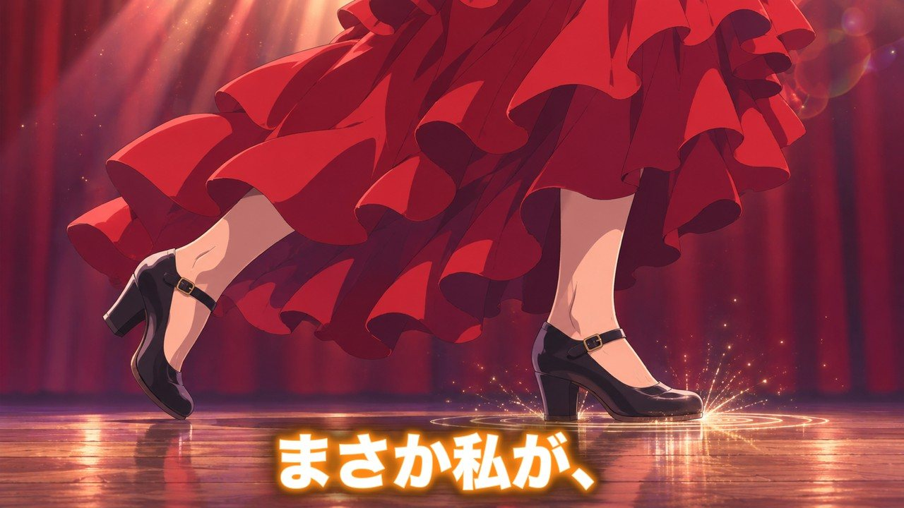
話す人 主役の語り
テロップ まさか私が、
内容 舞台の床を打つ足元から始まります。靴が床を鳴らす音で入り、言葉は途中で切って次の場面へつなぎます
全17シーン・約48秒・16:9・アニメ調。お子さんが落ち着いて自分の時間ができた40代半ばの女性が、体験レッスンをきっかけにフラメンコを始め、仲間と一緒に発表会の舞台に立つまでを、主役の女性（架空の人物）の語りでお届けします。お打ち合わせの内容と、ホームページ・Instagramのお写真をもとに作成しました。ページの最後に、ご確認いただきたいことをまとめています。
下の17シーンを、本番と同じ順番・秒数でつないだものです。まだ静止画で、人物の動き・ナレーション（声）・音楽・足音や手拍子の音は、このあと入れます。YouTubeで開く
| 伝えること | 未経験・初心者の方でも、舞台に立って輝ける場所であること。お打ち合わせでお話しいただいた「チャレンジを後押しする教室」を軸にしています |
|---|---|
| 主役 | 40代半ば、お子さんが落ち着いて「自分の時間をどう使おう」と考え始めた女性（架空の人物）です。幅広い年代の方がご自分を重ねられるよう、お打ち合わせで決めた年代にしています |
| 最初の3秒 | 広告は最初の数秒で見るかどうかが決まるため、舞台の床を打つ足元の音と、言い切らない一言「まさか私が、」から入ります |
| 流れ | 舞台の姿を先に見せ、そこから「少し前まで未経験」→ きっかけ → 体験レッスン → 先生 → レッスン → 仲間 → 発表会、と時間をさかのぼって語ります |
| 教室の強み | 「国際コンクールで入賞した現役の舞踊家」である先生が、少人数で「目の前でお手本を見せて、ひとりひとりを見てくれる」ことを、続けて伝えます |
| 体験レッスン | 最初の一歩が小さく見えるよう、スマートフォンで見つける → 思いきって行く → 靴を借りる → はじめて音が鳴る、を短い場面でつなぎました |
| 絵柄 | 光と空のきれいなアニメ調。先生はお写真に似せ、主役と生徒さんは架空の人物です |
| スタジオ | ホームページの中目黒スタジオのお写真を参考に、床の色・鏡・バー・時計などの雰囲気を合わせて描いています（実物そのままではありません） |
| 最後の画面 | ホームページと同じ、深い紺と淡い青の色合い。お打ち合わせどおり、お電話番号と2つのスタジオのご住所、「新規開講予定クラスあり・生徒募集中」「開講クラスはホームページで」を載せ、ホームページへご案内します |
| 載せていないもの | 開講クラスの曜日・時間、他教室との掛け持ちについて（お打ち合わせで「載せない」としたもの） |

話す人 主役の語り
テロップ まさか私が、
内容 舞台の床を打つ足元から始まります。靴が床を鳴らす音で入り、言葉は途中で切って次の場面へつなぎます
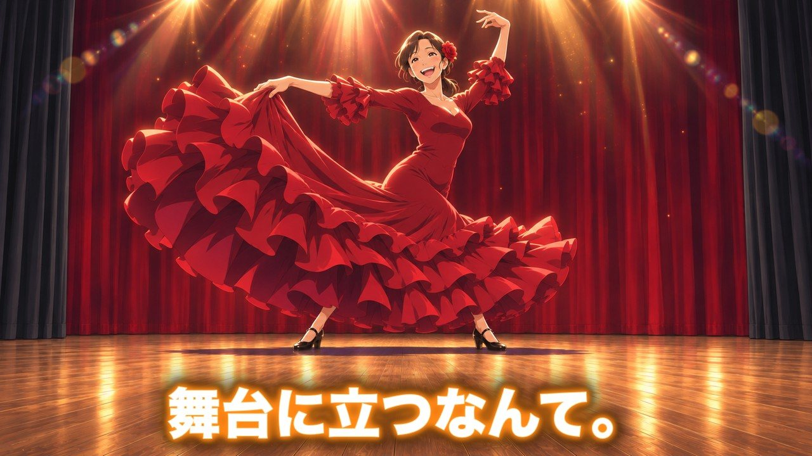
話す人 主役の語り
テロップ 舞台に立つなんて。
内容 カメラが上がると、赤い衣装でスカートを翻す主役。「まさか私が、」の続きをここで言い切ります
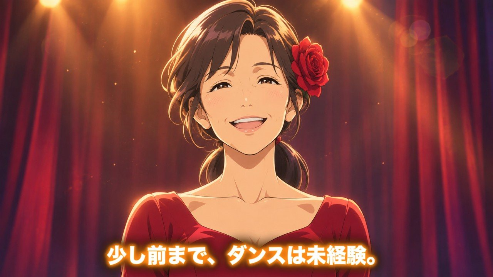
話す人 主役の語り
テロップ 少し前まで、ダンスは未経験。
内容 踊り終えた笑顔のアップ。ここで主役が「ふつうの人」だと分かります
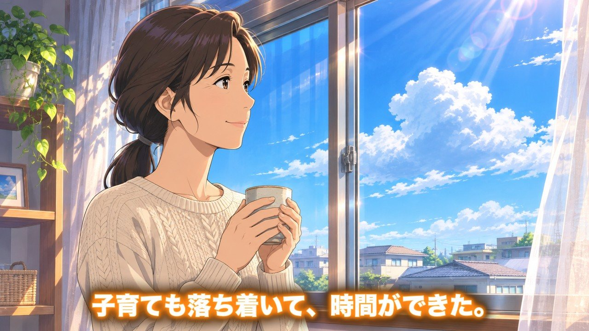
話す人 主役の語り
テロップ 子育ても落ち着いて、時間ができた。
内容 窓辺でお茶を手に。お子さんが落ち着き、自分の時間ができた40代半ばの女性です
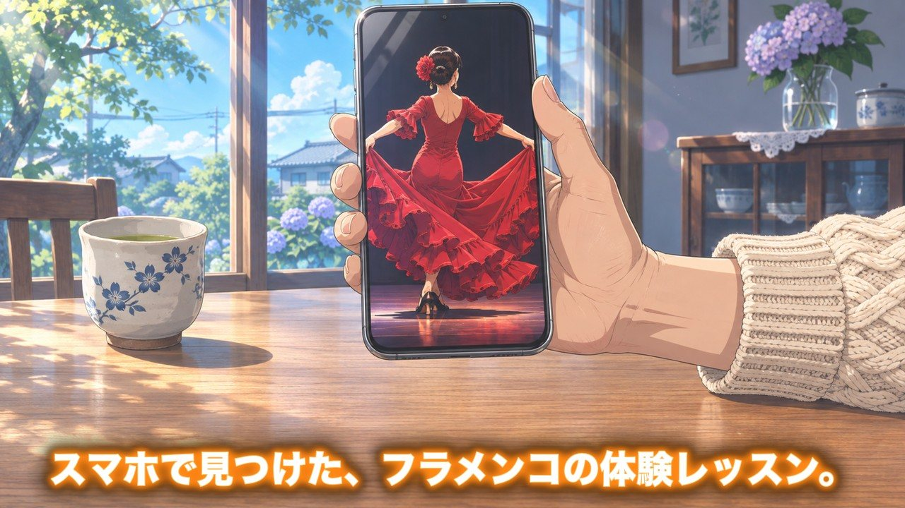
話す人 主役の語り
テロップ スマホで見つけた、フラメンコの体験レッスン。
内容 スマートフォンでフラメンコの体験レッスンを見つける手元
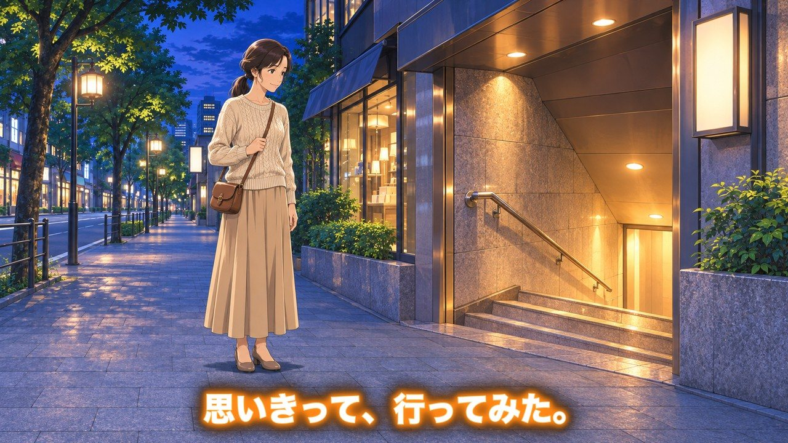
話す人 主役の語り
テロップ 思いきって、行ってみた。
内容 日が沈んだあと、スタジオのある建物の入口で足を止めます
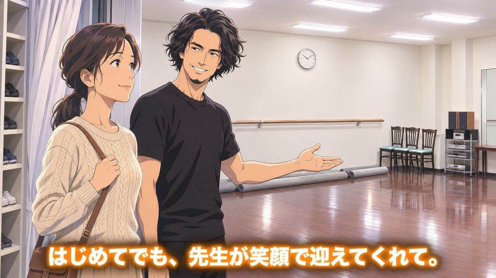
話す人 主役の語り
テロップ はじめてでも、先生が笑顔で迎えてくれて。
内容 スタジオの入口で、先生が笑顔で迎えます。お写真を参考に、先生に似せて描いています
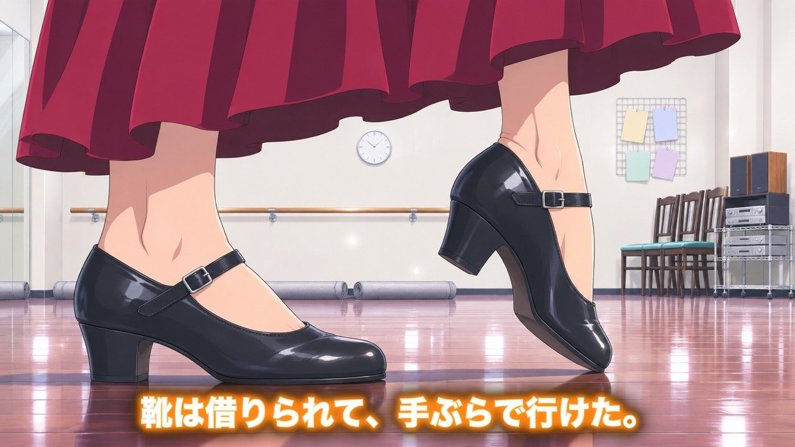
話す人 主役の語り
テロップ 靴は借りられて、手ぶらで行けた。
内容 お借りした靴の足元。ホームページの「体験レッスン時シューズ貸し出しOK！」をもとにしています
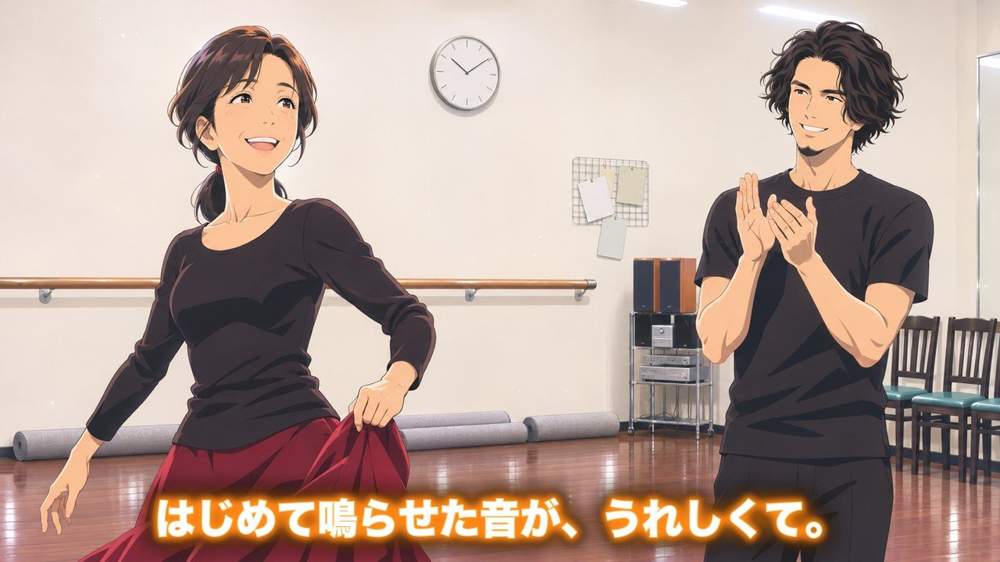
話す人 主役の語り
テロップ はじめて鳴らせた音が、うれしくて。
内容 はじめて足で音を鳴らせて笑う主役と、隣で拍手する先生
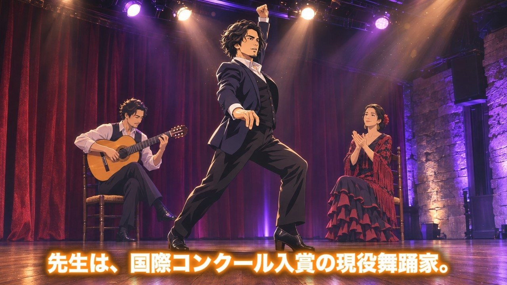
話す人 主役の語り
テロップ 先生は、国際コンクール入賞の現役舞踊家。
内容 舞台で踊る先生。いただいた舞台のお写真の動きと衣装を参考に描いています
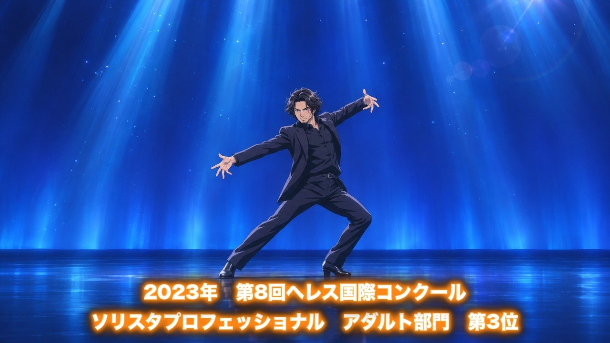
話す人 主役の語り
テロップ 2023年 第8回ヘレス国際コンクール／ソリスタプロフェッショナル アダルト部門 第3位
内容 青い大きな舞台で踊る先生。受賞歴はホームページの記載をそのまま載せています
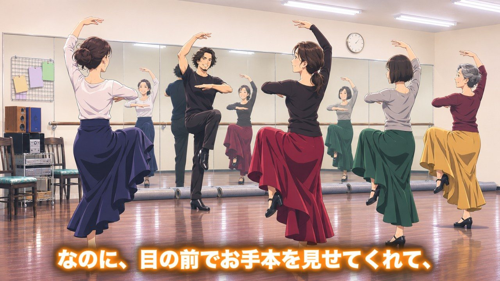
話す人 主役の語り
テロップ なのに、目の前でお手本を見せてくれて、
内容 正面に鏡のあるスタジオ。先生が前に出てお手本を見せ、生徒さんがまねます
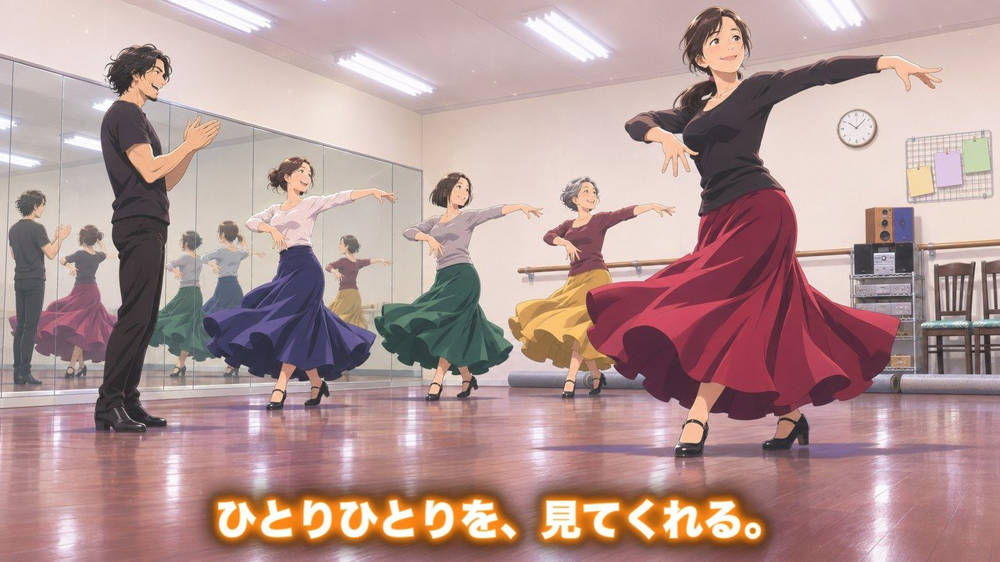
話す人 主役の語り
テロップ ひとりひとりを、見てくれる。
内容 低い位置から見上げた場面。先生が横で手拍子をしながら見守り、生徒さんのスカートが広がります
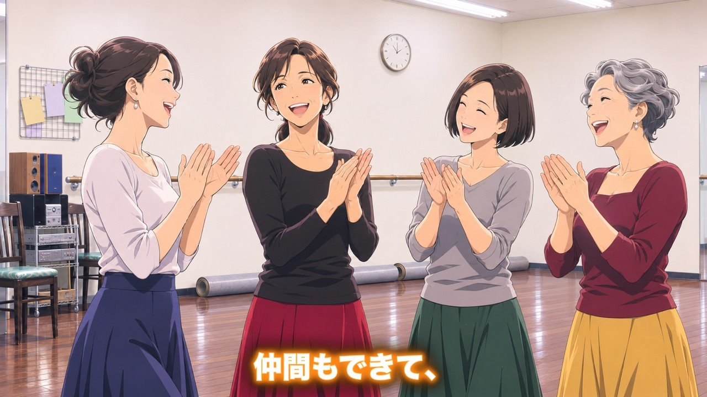
話す人 主役の語り
テロップ 仲間もできて、
内容 レッスン仲間と手拍子をして笑い合う場面
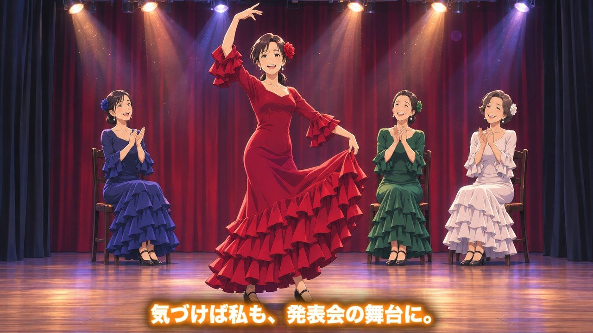
話す人 主役の語り
テロップ 気づけば私も、発表会の舞台に。
内容 仲間の手拍子の中、舞台で踊る主役。最初の場面に戻ります
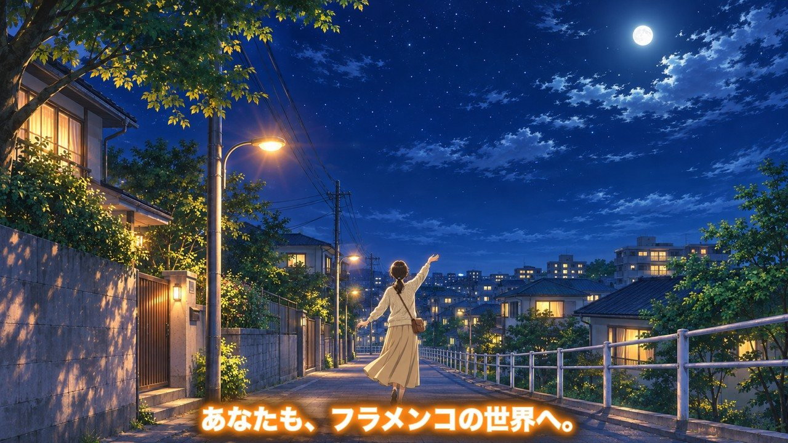
話す人 呼びかけ
テロップ あなたも、フラメンコの世界へ。
内容 夜空の下、踊るように帰る後ろ姿。呼びかけの一言
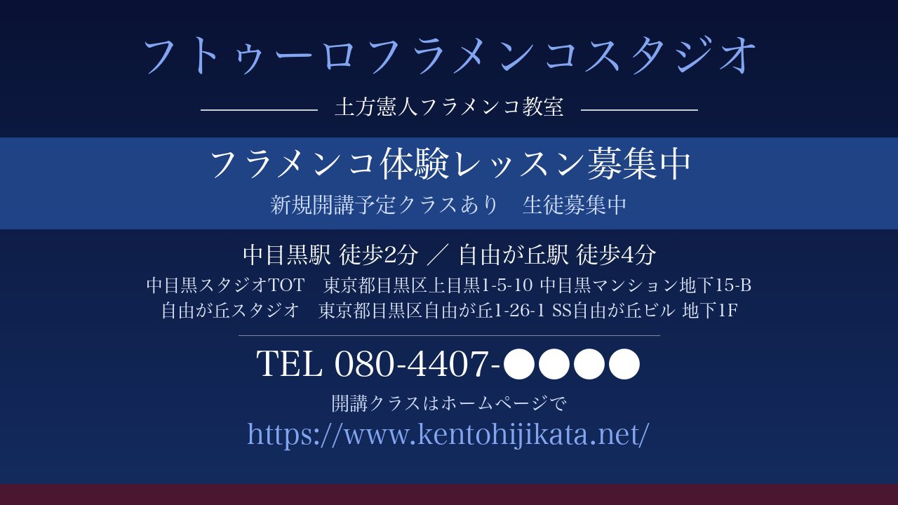
話す人 —
テロップ フトゥーロフラメンコスタジオ ｜ ― 土方憲人フラメンコ教室 ― ｜ フラメンコ体験レッスン募集中 ｜ 新規開講予定クラスあり 生徒募集中 ｜ 中目黒駅 徒歩2分 ／ 自由が丘駅 徒歩4分 ｜ 中目黒スタジオTOT 東京都目黒区上目黒1-5-10 中目黒マンション地下15-B ｜ 自由が丘スタジオ 東京都目黒区自由が丘1-26-1 SS自由が丘ビル 地下1F ｜ TEL 080-4407-●●●● ｜ 開講クラスはホームページで ｜ https://www.kentohijikata.net/
内容 教室名・最寄り駅・2つのスタジオのご住所・体験レッスン・お電話番号・ホームページ。ホームページと同じ色合いにしています
番号と一言で、LINEにご返信ください（例：「①この流れでよい」「④このままでよい」）。分かるところからで大丈夫です。
舞台の姿 → きっかけ → 体験レッスン → 先生 → レッスン → 仲間・発表会 → 教室のご案内、の流れで進めてよろしいでしょうか。
アニメ調で作成しました。この絵柄で進めてよろしいでしょうか。先生のお顔・髪型・服装で、直したいところがあればお知らせください（レッスンの場面は黒のTシャツ、舞台の場面はスーツにしています）。
下の言葉は、こちらでご用意したものです（主役は架空の人物で、実際の生徒さんのお話ではありません）。このままでよいか、直したい言葉があればお知らせください。
| S01 | まさか私が、 |
| S02 | 舞台に立つなんて。 |
| S03 | 少し前まで、ダンスは未経験。 |
| S04 | 子育ても落ち着いて、時間ができた。 |
| S05 | スマホで見つけた、フラメンコの体験レッスン。 |
| S06 | 思いきって、行ってみた。 |
| S07 | はじめてでも、先生が笑顔で迎えてくれて。 |
| S08 | 靴は借りられて、手ぶらで行けた。 |
| S09 | はじめて鳴らせた音が、うれしくて。 |
| S10 | 先生は、国際コンクール入賞の現役舞踊家。 |
| S11 | 2023年 第8回ヘレス国際コンクール／ソリスタプロフェッショナル アダルト部門 第3位 |
| S12 | なのに、目の前でお手本を見せてくれて、 |
| S13 | ひとりひとりを、見てくれる。 |
| S14 | 仲間もできて、 |
| S15 | 気づけば私も、発表会の舞台に。 |
| S16 | あなたも、フラメンコの世界へ。 |
ホームページのお知らせ（2027年1月からの新名称）をもとに、「フトゥーロフラメンコスタジオ ― 土方憲人フラメンコ教室 ―」としています。この表記でよろしいでしょうか（先生のお名前の表記も含めてご確認ください）。
S03「少し前まで、ダンスは未経験。」、S15「気づけば私も、発表会の舞台に。」としています。体験レッスンから発表会に出るまで、おおよそどのくらい（何か月〜何年）でしょうか。
中目黒スタジオのお写真を参考にしています。鏡の位置や雰囲気で、実際と大きく違って見えるところがあればお知らせください。